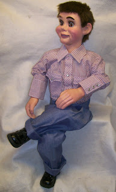
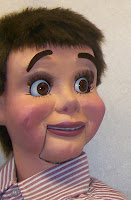
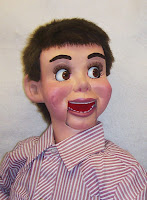

Finished!
10/29/2010
{kind=link}

You may remember my writing about the three unfinished heads I purchased on eBay - heads I started myself over 25 years ago, gave to my son, and then bought back (still unfinished) from Kevin when he offered them for sale on eBay. Weird chain of events, I know, but true. Long story short, I have just this week completed one of those figures, and here he is, happy to be finished after waiting over two decades and eager to begin his performing career.
He is 36" tall, and has my standard offering of animations: turning head (360 degrees), with ball/socket neck, side to side moving eyes (self-centering), and raising eyebrows. The hands and ears were molded by Brose, but otherwise he is 100% my crea 00.
00.
Contact Mr. D to order or ask any questions.
He is 36" tall, and has my standard offering of animations: turning head (360 degrees), with ball/socket neck, side to side moving eyes (self-centering), and raising eyebrows. The hands and ears were molded by Brose, but otherwise he is 100% my crea
{kind=link}

tion, signed and dated. $550. 00.
00.Contact Mr. D to order or ask any questions.
